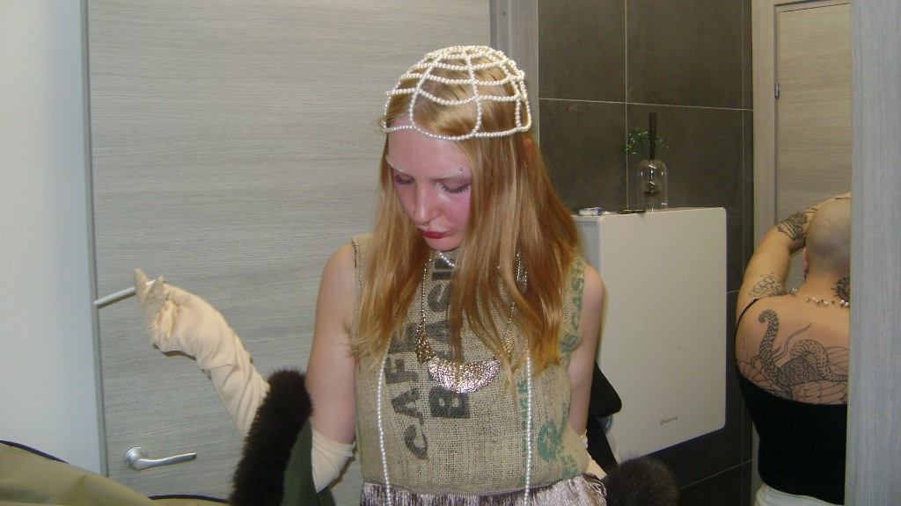
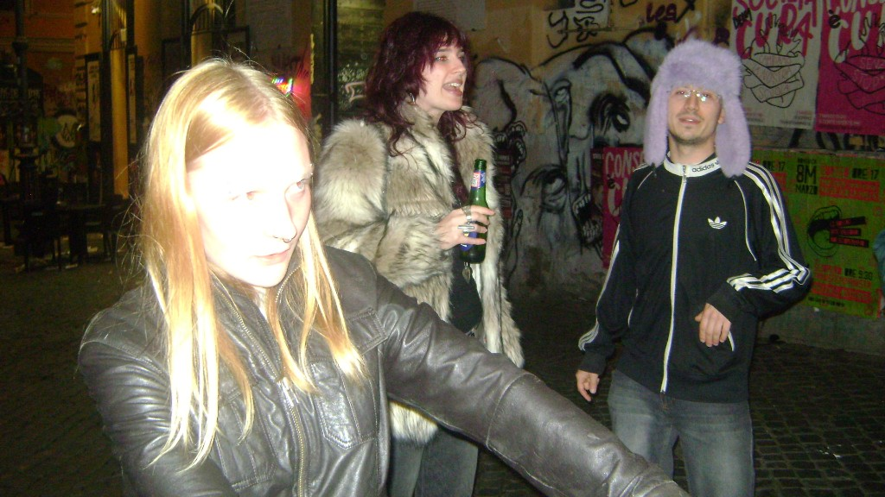
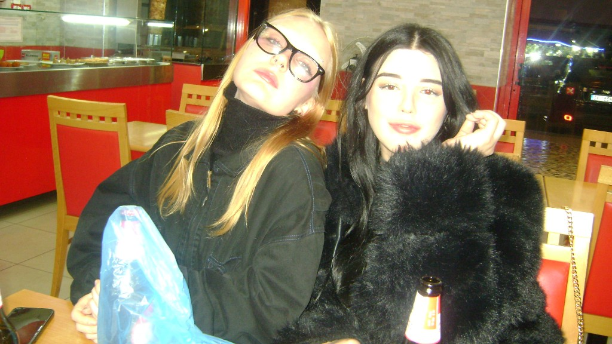

Chi sono
Sono una ragazza lituana che ha scelto di chiamare casa Roma, dopo aver trascorso molti anni in Friuli. Questo percorso mi ha dato uno sguardo aperto e ibrido, fatto di culture, lingue e sensibilità diverse che influenzano profondamente il mio modo di progettare.
Sono una designer dei diversi media: mi muovo tra digitale e visivo con curiosità, cercando sempre soluzioni creative e mai scontate. Mi interessa esplorare, sperimentare e trovare un linguaggio che sia autentico, evitando il più possibile la banalità.
Ho 21 anni e sono ancora in formazione. Studio, osservo e costruisco il mio percorso passo dopo passo, con l'obiettivo di crescere come designer e come persona, trasformando ogni esperienza in un'opportunità creativa.



Il mio design
Il mio design non è decorazione, è un cortocircuito visivo. La mia ossessione è una sola: catturare la tua attenzione e costringere lo sguardo a fermarsi. Non mi accontento di creare immagini che vengano "viste"; voglio immagini che ti entrino dentro, che ti forzino a confrontarti con la mia visione del mondo.
Tutto parte dalla realtà, quella vera e cruda. Parto da fotografie scattate da me o dagli amici, istanti banali presi dalla nostra quotidianità, momenti che spesso finiscono dimenticati in un rullino. È lì che intervengo. Il mio lavoro è dare a questi scatti una seconda vita, una vita violenta e distorta.
Uso colori saturi, primari – il rosso, il blu, il giallo – che urlano visivamente, rompendo ogni equilibrio formale. Non cerco l'estetica perfetta, cerco l'energia grezza. Trasformo il frammento di una giornata comune in un'opera d'arte fuori dagli schemi, un'allucinazione che rompe le barriere tra la mia testa e il tuo occhio.
Se guardi i miei lavori, non stai solo guardando della grafica: stai entrando nel mio modo di vedere le cose. È un atto di possesso visivo, un modo per trasformare l'ordinario in qualcosa che graffia e che rimane impresso.